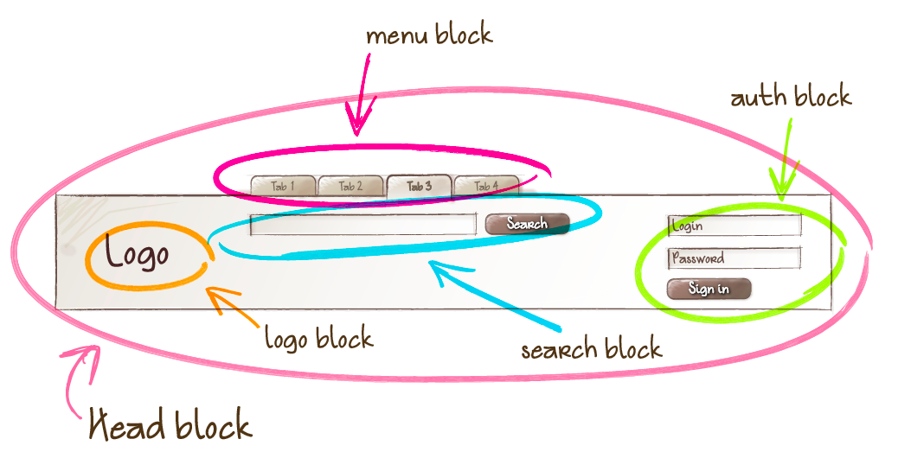
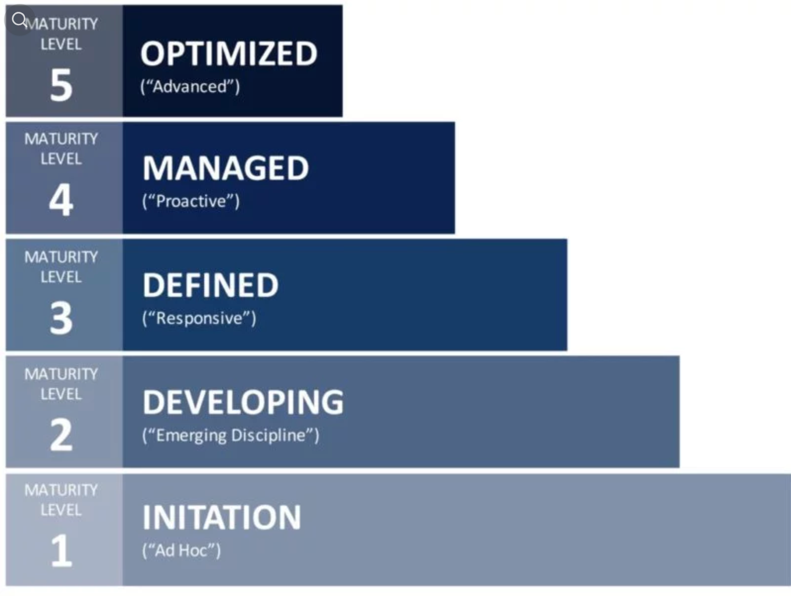

Products are systems rather than pages and as soon as we stop perceiving them as that, the better.
Anna Debenham
UI composition

Creating UI with a design system
Business value of design system
Product recognizability
Faster design and development
Fewer costs
"Time to market" decreased
Doing "real work"
Getting mature
⬅

Maturity
The highest levels of maturity are achieved with design systems
The very fact of design systems emerging as a new approach and a set of artifacts that affect the process of development demonstrates the subject of Organizational Innovation and Deployment.